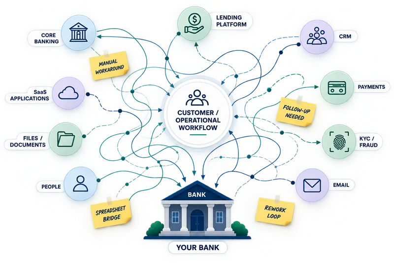
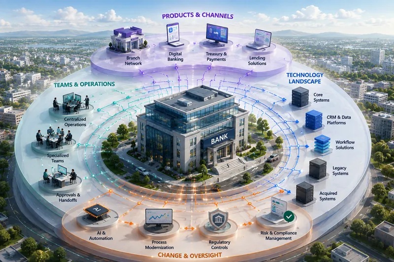
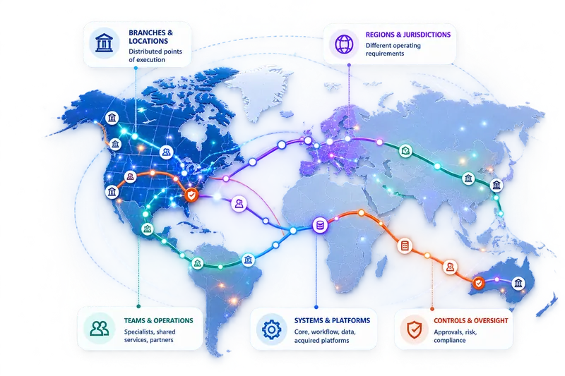

Execution Intelligence for Banks
Execution Intelligence for Banking.
See how banking work actually executes across people, applications, controls and AI—and uncover the waiting, rework and exceptions behind business outcomes.
- Read-only access
- No process remodelling
- First execution view in about 10 business days
PROVEN IN BANKING
Real banking experience. Proven competitive strength.
RE-ViVE is serving two banking customers, applying Execution Intelligence to real operational processes and enterprise data. Its approach has also succeeded in two competitive evaluations involving established enterprise software alternatives.
Two banking customers
Experience with real banking operations, including B2B customer onboarding and lost and stolen card replacement workflows.
Two successful competitive evaluations
Selected through evaluations involving established enterprise process intelligence alternatives—demonstrating a credible differentiated approach.
Built for broader banking operations
Extend the same execution foundation to payments, lending, controls, servicing and capital-markets workflows as needs evolve.
Complex workflows. Multiple systems. Minimal process preparation. RE-ViVE reconstructs execution from existing operational records—without requiring predefined process models or a lengthy discovery-and-conformance cycle.
Why banks choose RE-ViVE →THE EXECUTION REALITY
One expected process. Many actual paths.
A banking transaction may follow the approved process—or take a different route through repeated validation, waiting, manual review and exceptions. The outcome can look identical even when the journey is not.
The question is not only whether a transaction completed—but which path it took, where time was lost, and what that means at scale.
Designed for different banking environments
Different banks. Different operating realities. One execution view.
Explore how Execution Intelligence addresses the priorities of institutions at different scales, without assuming their operating models are the same.

Make limited capacity go further.
Identify document rework, manual handoffs and exceptions without launching a major transformation program.
Explore community banks →
See what growth changes in execution.
Understand the operational effects of expansion, integration and modernization across functions.
Explore regional banks →
See across organizational boundaries.
Connect execution evidence across complex technology, teams and control environments.
Explore global banks →Across banking operations
Where Execution Intelligence applies across the bank.
RE-ViVE can begin with any banking workflow that crosses systems, teams, controls or automation. These are representative areas, not a fixed workflow library.
Customer and account journeys
Onboarding · KYC · Account opening · Servicing
Treasury and payments
Payment onboarding · Exceptions · Investigations · Cash management
Lending and credit
Application · Underwriting · Approval · Closing · Servicing
Service and operations
Cases · Requests · Disputes · Investigations
Risk, controls and compliance
KYC · AML · Reviews · Exceptions · Controls
Capital markets and institutional
Onboarding · Documentation · Approvals · Servicing
AI in banking
AI changes the work. Banks still need to understand the execution.
Execution Intelligence provides the operational context needed before AI is introduced, while AI participates in banking workflows, and after the change is made.
Before AI: know what you are automating.
Understand current execution, variants, exceptions, manual intervention and control paths before deciding where AI belongs.
During AI: see how it actually participates.
Observe decision paths, retries, human intervention, overrides, failures and cost as AI becomes part of banking execution.
After AI: know whether execution improved.
Evaluate whether AI reduced delay and manual effort, maintained required controls, improved consistency and produced the intended outcome.
The platform
Execution Intelligence. Beyond traditional process mining and custom solutions.
A fundamentally different starting point: reconstruct actual execution from existing records, then analyze and monitor it across people, applications, automation and AI.
Traditional process mining and custom-built solutions often begin with extensive process discovery, modeling or integration effort. RE-ViVE starts with existing execution evidence and deterministically reconstructs how work actually happened across systems.
PRACTICAL DEPLOYMENT
What does it take to get started?
RE-ViVE works with the systems and records a bank already has, without replacing operational applications or redesigning workflows.
Provide read-only access to relevant records and collaborate on the workflow and data context. RE-ViVE handles the execution reconstruction and analysis.
Works across core banking, CRM, workflow platforms, databases, files and custom applications—without requiring a new operational system.
Choose an environment aligned to bank requirements: private cloud, client cloud or on-premises, with source access maintained as read-only.
START WHERE EXECUTION VISIBILITY MATTERS
Start with one workflow. See the bigger picture. Across the bank.
From onboarding and payments to lending, operations, compliance and beyond, RE-ViVE can examine any suitable workflow with available execution evidence. Start with the process that matters most to your bank.
- Customer and business onboarding
- Payments, treasury and investigations
- Lending and credit operations
- Card servicing and disputes
- Risk, compliance and controls
- Capital markets and institutional operations
- Or any other cross-system banking workflow